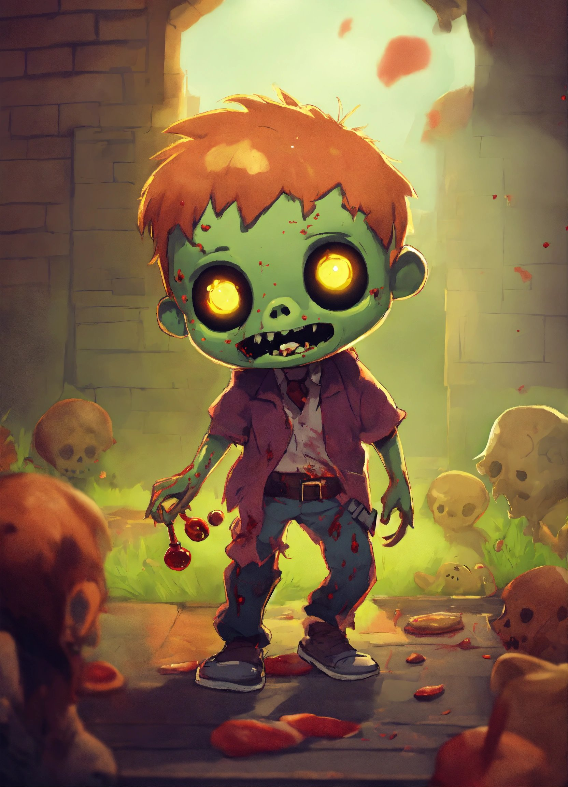
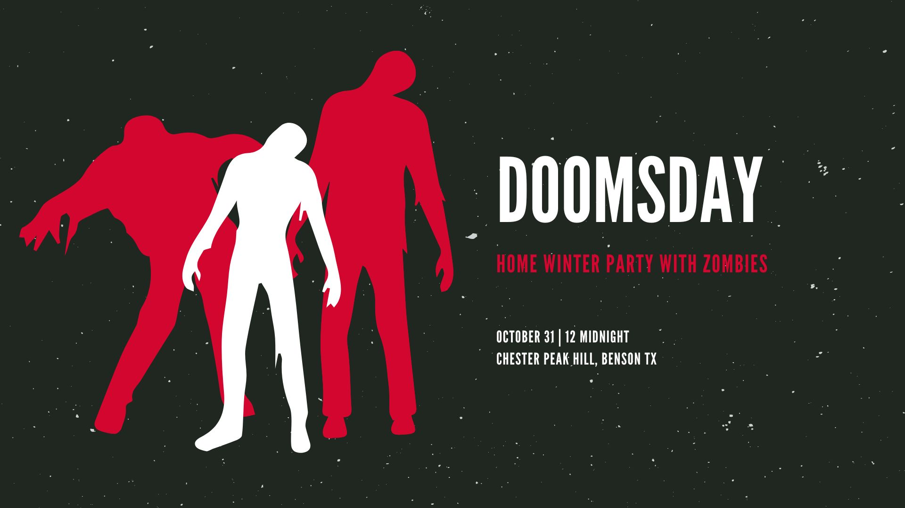

На Главную
Зомби Новости
Зомби Меню
ЛИГБЕС Против Зомби
Зомби Закладка
Войти

Добро пожаловать в Зомбилэнд
Здесь вы получите знания о зомби.

Джордж Ромеро: человек, который придумал зомби
Зомби — оживший мертвец, потерявший контроль над собой и своим телом, либо подчиняющийся чьим-то приказам.
В фантастике зомби — это поражённые некой инфекцией (например, вирусом) живые люди (иногда животные), полностью потерявшие контроль над собой, и стремящиеся нападать и убивать других живых людей/живых существ, иногда пожирать трупы, при этом инфекция может передаваться через укусы.